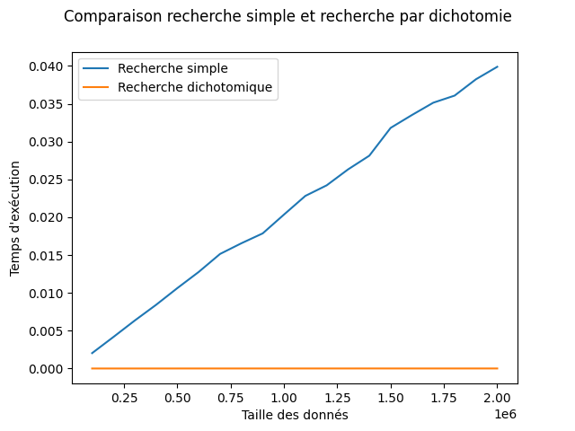

C6 Notions d'algorithmique
Activités
 Activité 1 : Rechercher dans une liste
Activité 1 : Rechercher dans une liste
On souhaite écrire une fonction recherche(element,liste) en Python qui renvoie True ou False suivant que element se trouve ou non dans liste. On donne ci-dessous la réponse d'un élève :
- Recopier ce code puis corriger l'erreur commise sur le test d'égalité à la ligne 5.
- Vérifier que les tests
recherche(3,[3,10,7])et ̀recherche(4,[3,10,7])renvoient les valeurs attendues. - En faisant un test adapté, montrer que cette fonction n'est pas correcte.
- Doit-on renvoyer
Falsesi le premier élément testé est différent de celui recherché comme indiqué dans le commentaire ligne 4 ? - Corriger cette fonction.
Activité 2 : Recherche dichotomique
- Télécharger et exécuter le programme du jeu du nombre mystère
- Faire quelques parties, expliquer la stratégie de l'ordinateur pour trouver le nombre mystère.
- Lorsque le nombre est compris entre 1 et 100, en combien d'essais au maximum l'ordinateur trouve-t-il la solution ?
- Et si le nombre mystère est compris entre 1 et 200 ?
-
En s'inspirant de cette stratégie de recherche appelée dichotomie (couper en deux), on cherche un algorithme pour déterminer si un élément se trouve ou non dans une liste. Par exemple, si on recherche \(\textcolor{red}{28}\) dans \([14, 15, 17, 22, 23, 25, 29, 34, 38]\), le tableau ci-dessous représente les étapes de la méthode :
Etape Liste Milieu Comparaison 
\(\underbrace{[\overset{\textcolor{red}{_\wedge^{0}}}{14}, 15, 17, 22,}_{ } \underset{_4^\uparrow}{\textcolor{darkblue}{23}} , \overbrace{25, 29, 34, \underset{\textcolor{red}{_8^{\vee}}}{38}]}_{ }\) \((0+8)//2 = 4\) \(\textcolor{darkblue}{23} <\textcolor{red}{28}\) 
\([\colorbox{lightgray}{14, 15, 17, 22,23} , \underbrace{\overset{\textcolor{red}{_\wedge^{5}}}{25}} \underset{_6^\uparrow}{\textcolor{darkblue}{29}}, \overbrace{34, \underset{\textcolor{red}{_8^{\vee}}}{38}]}_{ }\) \((5+8)//2=6\) \(\textcolor{darkblue}{29} \geq \textcolor{red}{28}\). 
\([\colorbox{lightgray}{14, 15, 17, 22,23} , \underset{_5^\uparrow}{\overset{\textcolor{red}{_\wedge^{5}}}{25}}, \underset{\textcolor{red}{_6^{\vee}}}{29} \colorbox{lightgray}{34,38}]\) \((5+6)//2=5\) \(\textcolor{darkblue}{25} < \textcolor{red}{28}\). 
\([\colorbox{lightgray}{14, 15, 17, 22,23,25} \underset{\textcolor{red}{_6^{\vee}}}{\overset{\textcolor{red}{_\wedge^6}}{29}} \colorbox{lightgray}{34,38}]\) - - Arrêt de l'algorithme, \(28\) n'est pas dans la liste.
- Dès l'étape 2, on a grisé les éléments situés avant 23 pour indiquer que 28 ne s'y trouve pas. Quelle propriété de la liste le permet ?
- Que représente les nombres situés en rouge au-dessus (ou au-dessous) des éléments de la liste ?
- Quelle est la condition d'arrêt de cet algorithme ?
- Si la liste contenait 100 éléments, en combien d'étapes cet algorithme se terminerait-il ? Justifier.
-
Recopier et compléter le fonctionnement de cet algorithme pour chercher si \(\textcolor{red}{4}\) est dans la liste \([1, 4, 7, 12, 13, 14]\) :
Etape Liste Milieu Comparaison 1 \(\underbrace{[\overset{\textcolor{red}{_\wedge^{...}}}{1}, 4,}_{ } \underset{_2^\uparrow}{\textcolor{darkblue}{7}} , \overbrace{12, 13, \underset{\textcolor{red}{_{...}^{\vee}}}{14}]}_{ }\) \((...+...)//2 = ...\) \(\textcolor{darkblue}{...} \geq \textcolor{red}{4}\) 2 ... ... ... 3 ... ... ... 4 ... ... ... -
Recopier et compléter la fonction Python suivante qui implémente l'algorithme de recherche par dichotomie.
Aide
- Les variables
debut(ligne 2) etfin(ligne 3) contiennent les indices de la liste entre lesquels on recherche. - La condition d'arrêt (ligne 4) est que l'écart entre ces deux indices est égale à 0.
- Si
element>liste[milieu](condition ligne 6), alors on peut restreindre la recherche à droite de milieu (exclu). - Sinon on restreint la recherche à gauche de milieu (inclus)
Activité 3 : Complexité d'un algorithme
- Graphique de comparaison de temps d'exécution
Jupyter notebook
Le graphique suivant qui compare les temps d'exécution des deux algorithmes de recherche dans une liste a été construit dans le notebook précédent :

- Quel algorithme est le plus rapide ?
- Cas de la recherche simple
- Pour la recherche simple, si une liste contient \(n\) éléments, combien de comparaisons seront faites (au maximum) pour une recherche ?
- Par conséquent, si on double la taille de la liste, que dire du nombre de comparaisons ?
- Cas de la recherche dichotomique
- Dans la recherche dichotomique, après chaque comparaison comment évolue la portion de la liste dans laquelle on effectue la recherche ?
- Par conséquent, si on double la taille de la liste, combien de comparaisons supplémentaires seront nécessaires ?
-
Compléter le tableau suivant :
Taille de la liste Nombre de comparaisons recherche simple Nombre de comparaisons recherche dichotomique \(100\) \(100\) \(7\) \(200\) ... ... \(400\) ... ... \(800\) ... ...
Activité 4 : Correction d'un algorithme
Activité 5 : Terminaison d'un algorithme
Cours
Vous pouvez télécharger une copie au format pdf du diaporama de synthèse de cours présenté en classe :
Attention
Ce diaporama ne vous donne que quelques points de repères lors de vos révisions. Il devrait être complété par la relecture attentive de vos propres notes de cours et par une révision approfondie des exercices.
QCM
1. On a écrit une fonction qui prend en paramètre une liste non vide et qui renvoie son plus grand élément. Combien de tests faudrait-il écrire pour garantir que la fonction donne un résultat correct pour toute liste ?
- a) Il faudrait écrire une infinité de tests, on ne peut pas prouver que cette fonction est correct simplement en la testant
- b) Deux tests : pour une liste à un élément et pour une liste à deux éléments ou plus.
- c) Trois tests : pour une liste vide, pour une liste à un élément et pour une liste à deux éléments ou plus.
- d) Deux tests : pour le cas où le plus grand élément est en début de liste et pour le cas où le plus grand élément n'est pas en début de liste
- a) Il faudrait écrire une infinité de tests, on ne peut pas prouver que cette fonction est correct simplement en la testant
- b)
Deux tests : pour une liste à un élément et pour une liste à deux éléments ou plus. - c)
Trois tests : pour une liste vide, pour une liste à un élément et pour une liste à deux éléments ou plus. - d)
Deux tests : pour le cas où le plus grand élément est en début de liste et pour le cas où le plus grand élément n'est pas en début de liste
2. Quelle affirmation concernant la fonction ci-dessous (où x et y sont des entiers naturels) est fausse ?
- a) La propriété
s+t=x+yest un invariant de boucle - b) La valeur finale de
test 1 - c) La propriété "
test supérieur ou égal à 0" est un invariant de boucle - d) Le résultat renvoyé est égal à la somme
x+y
- a) La propriété
s+t=x+yest un invariant de boucle - b)
La valeur finale detest 1 - c)
La propriété "test supérieur ou égal à 0" est un invariant de boucle - d)
Le résultat renvoyé est égal à la sommex+y
3. Donner un invariant de boucle de l'algorithme suivant qui permet de calculer la somme des N premiers entiers (où N est un nombre entier) :
- a)
somme = 0+1+2+...+ieti<N - b)
somme = 0+1+2+...+Neti<N - c)
somme = 0+1+1+...+ieti<N+1 - d)
somme = 0+1+2+...+Neti<N+1
- a)
somme = 0+1+2+...+ieti<N - b)
somme = 0+1+2+...+Neti<N - c)
somme = 0+1+1+...+ieti<N+1 - d)
somme = 0+1+2+...+Neti<N+1
4. Quel test va permettre de détecter l'erreur dans la fonction Python suivante qui ne calcule pas toujours correctement le résultat de \(x^y\) (avec \(x\) et \(y\) entiers) ?
- a)
puissance(2,0) - b)
puissance(2,1) - c)
puissance(2,2) - d)
puissance(2,10)
- a)
puissance(2,0) - b)
puissance(2,1) - c)
puissance(2,2) - d)
puissance(2,10)
5. Pour pouvoir utiliser un algorithme de recherche par dichotomie dans une liste, quelle précondition doit être vraie ?
- a) La liste doit être triée.
- b) La liste ne doit pas comporter de doublons.
- c) La liste doit comporter uniquement des entiers positifs.
- d) La liste doit être de longueur inférieure à 1024.
- a) La liste doit être triée.
- b)
La liste ne doit pas comporter de doublons. - c)
La liste doit comporter uniquement des entiers positifs. - d)
La liste doit être de longueur inférieure à 1024.
6. La fonction suivante doit calculer la moyenne d'un tableau de nombres. Avec quelles expressions faut-il compléter l'écriture pour que la fonction soit correcte ?
- a)
0etlen(tableau) - b)
0etlen(tableau)+1 - c)
1etlen(tableau) - d)
1etlen(tableau)+1
- a)
0etlen(tableau) - b)
0etlen(tableau)+1 - c)
1etlen(tableau) - d)
1etlen(tableau)+1
7. Dans une recherche par dichotomie, combien de comparaisons faut-il faire au maximum pour savoir si une valeur se trouve ou non dans un tableau trié de 1000 nombres ?
- a) 3
- b) 10
- c) 1000
- d) 2000
- a)
3 - b) 10
- c)
1000 - d)
2000
Exercices
Exercice 1 : Parcours par indice
On reprend la fonction Python de recherche d'un élément dans une liste (activité 1) :
- Modifier la ligne 3 de façon à effectuer un parcours par indice plutôt que par élément
- Modifier en conséquence la ligne 4
- Tester la fonction
Exercice 2 : Analyser un programme
On considère la fonction Python suivante :
def cherche_position(element,liste):
for pos in range(len(liste)):
if liste[pos]==element:
return pos
return -1
- Prédire la valeur renvoyée par
cherche_position("Y",["P","Y","T","H","O","N"])puis vérifier en testant la fonction. - Même question pour
cherche_position("A",["P","Y","T","H","O","N"]) - Même question pour
cherche_position("M",["P","R","O","G","R","A","M","M","E"]) - Que fait cette fonction ? Ecrire sa chaîne de documentation.
Exercice 3 : Predire des temps d'exécution
- Si un algorithme de recherche linéaire s'exécute environ en 0.002 s sur une liste de \(10\,000\) éléments, en combien de temps environ devrait-il s'exécuter pour une liste de un million d'éléments ?
- Si on double la taille d'une liste, le temps d'exécution d'un algorithme de recherche dichotomique va-t-il aussi doubler ? Justifier.
Exercice 4 : Recherche dichotomique
On donne ci-dessous la fonction de recherche par dichotomie vue à l'activité 2 :
def recherche_dichotomie(element,liste):
debut = 0
fin = len(liste)-1
while fin-debut>0:
milieu = (debut+fin)//2
if element>liste[milieu]:
debut=milieu+1
else:
fin=milieu
if element==liste[debut]:
return True
else:
return False
- Première améliorations
- Modifier cette fonction afin qu'elle renvoie un résultat correct lorsque la liste est vide.
- Ajouter une chaîne de documentation.
- Ajouter des préconditions sous forme d'instructions
assert.
- Modifier cette fonction de façon à sortir de la boucle
whiledès que l'élement cherché est égal àliste[milieu].
Exercice 5 : Puissance
On considère la fonction Python suivante :
- Que fait cette fonction ? Ecrire sa chaîne de documentation.
- Proposer des préconditions sur les arguments.
- Montrer que l'algorithme utilisé dans cette fonction a une complexité linéaire.
Exercice 6 : Factorielle
En mathématiques, on appel factorielle d'un entier et \(n\) et on note \(n!\) le produit de cet entier par tous ceux qui le précèdent à l'exception de zéro, et on convient d'autre part que \(O!=1\). Par exemple :
\(5!= 5 \times 4 \times 3 \times 2 \times 1 = 120.\)
On considère la fonction Python suivante :
def factorielle(n):
'''Renvoie factorielle de n, avec n un entier positif ou nul'''
if n==0:
return 1
else:
fact=1
for i in range(n):
fact=fact*i
return fact
- Ecrire une instruction
assertpermettant de vérifier que cette fonction renvoie bien 120 pour factorielle de 5. - On suppose qu'on appelle
factorielle(5), donner les valeurs prises par la variablefactlors des passages successifs dans la bouclefor. - Vérifier que la propriété "la variable
factcontient \(k!\) après \(k\) tours de boucle" est un invariant de boucle. - Que peut-on en déduire ?
Exercice 7 : Nombre de chiffres d'un nombre
On considère la fonction suivante :
def nombre_chiffres(n):
'''Renvoie le nombre de chiffres de l'entier naturel n en base 10'''
k=0
while n>0:
n=n/10
k=k+1
return k
- Ecrire un jeu de test pour cette fonction
- Le résultat de
nombre_chiffres(0)est-il correct ? Sinon corriger cette fonction. - Ajouter des préconditions sous forme d'instruction
assertsur la variablen. - Justifier que ce programme termine en utilisant la méthode du variant de boucle.
- Proposer une fonction similaire qui renvoie le nombre de bits nécessaire pour écrire un entier donné en base 2.
Exercice 8 : Suite de Syracuse et terminaison
On peut lire sur wikipedia que :
"En mathématiques, on appelle suite de Syracuse une suite d'entiers naturels définie de la manière suivante : on part d'un nombre entier strictement positif ; s’il est pair, on le divise par 2 ; s’il est impair, on le multiplie par 3 et on ajoute 1. En répétant l’opération, on obtient une suite d'entiers strictement positifs dont chacun ne dépend que de son prédécesseur.
Par exemple, à partir de 14, on construit la suite des nombres : 14, 7, 22, 11, 34, 17, 52, 26, 13, 40, 20, 10, 5, 16, 8, 4, 2, 1, 4, 2… C'est ce qu'on appelle la suite de Syracuse du nombre 14."
- Donner la suite de Syracuse du nombre 12.
- Même question pour le nombre 29.
- Ecrire une fonction
syracusequi renvoie la liste des valeurs de la suite de syracuse d'un entier naturel postifndonné en paramètre. On arrêtera notre liste dès que la valeur 1 y est ajoutée. - Ecrire un jeu de test pour votre fonction.
- Recherche sur le Web ce qu'on appelle conjecture de Syracuse (ou conjecture de Collatz). Consulter par exemple la page wikipedia citée ci-dessus.
- Que pouvez-vous en conclure sur la preuve de la terminaison de la fonction
syracuse?
Exercice 9 : Exponentiation rapide
On considère la fonction Python suivante où x est un nombre quelconque et n un entier positif :
- Tester cette fonction avec
x=2et les valeurs suivantes den: 4, 5, 8 et 10. - Que fait cette fonction ?
-
Donner les valeurs successives prises par les variables
p,xetnlors de l'appel de cette fonction avecx=2etn=9en recopiant et en complétant le tableau suivant :Variables pxnInitialisation 1 2 9 Tour 1 ... ... ... Tour 2 ... ... ... Tour 3 ... ... ... -
Déterminer la complexité de cet algorithme (on pourra déterminer le nombre de tours de boucle nécessaire en fonction de
n)